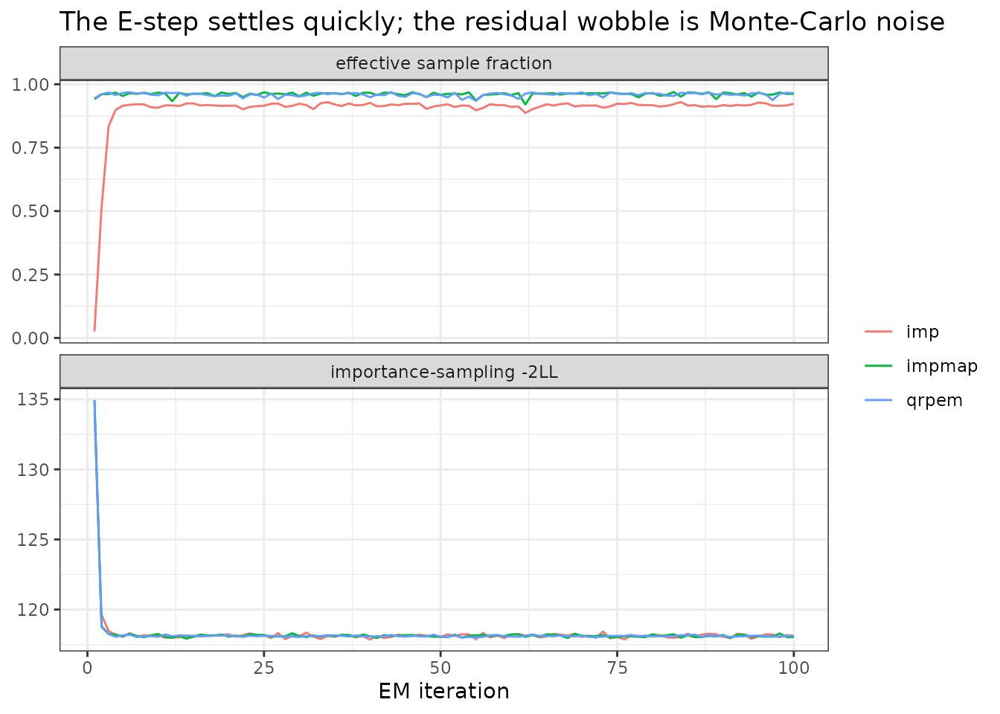
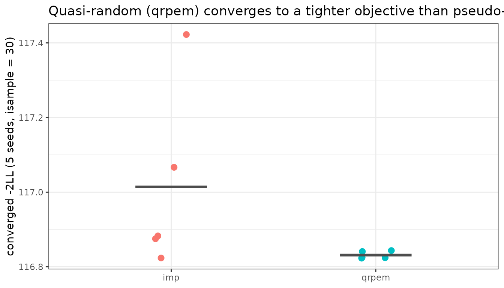

Importance-sampling EM in nlmixr2: imp, impmap and qrpem
2026-09-18
Source:vignettes/articles/imp-impmap-qrpem.Rmd
imp-impmap-qrpem.RmdThe importance-sampling EM family
nlmixr2 provides three closely related
Monte-Carlo expectation-maximization estimators, all
built on one importance-sampling kernel and differing only in how the
per-subject E-step is sampled:
-
est = "imp"– importance sampling with the proposal centered at each subject’s running conditional mean. This is similar to NONMEM’sMETHOD=IMP. -
est = "impmap"– importance sampling with the proposal centered at each subject’s MAP mode, using the inner (conditional) Hessian as covariance. This is similar to NONMEM’sMETHOD=IMPMAP. -
est = "qrpem"– the same EM but with Sobol quasi-random importance samples and a SIR-accelerated M-step. This is similar to the quasi-random parametric EM of Leary & Dunlavey (2012) – the method Phoenix NLME made its flagship.qrpemControl()is exactlyimpmapControl(qr = TRUE, sir = TRUE).
What unites them, and separates them from FOCEI, is that they evaluate the marginal likelihood by Monte-Carlo integration rather than by a Laplace approximation. Each one draws samples for every subject from a proposal distribution aimed at that subject’s posterior, then re-weights those samples to undo the aiming. The three differ only in how the proposal is aimed and how the samples are drawn.
This article is ordered practically: when to reach for these
methods, a worked example, and the
parameters worth knowing come first. How it works explains the algorithm in plain
terms afterwards, and Appendix A walks step by
step through NONMEM’s IMP/IMPMAP, marking what
is the same and what is different.
When to use these methods
Reach for imp / impmap / qrpem
when:
you need a trustworthy marginal likelihood and do not trust FOCEI’s Laplace approximation – strongly nonlinear models, sparse data, or non-normal (categorical, count, ordered-categorical, time-to-event) endpoints, where the posterior is genuinely non-Gaussian. These fits report the Laplace and the Monte-Carlo likelihood side by side, so the gap between them tells you how much the approximation was costing you (see below);
you want a fit that is methodologically comparable to NONMEM
IMP/IMPMAPor to Phoenix QRPEM, e.g. to cross-check a submission run;you want importance-sampling standard errors (
covMethod = "imp", the default) computed from the same Monte-Carlo likelihood rather than a Laplace or sandwich estimator;FOCEI is struggling to converge but you still want a likelihood-based fit; the EM update is monotone in expectation and does not depend on an outer quasi-Newton search.
Which of the three (the proposals are compared in detail further down):
impmapis the sensible default of the family. The MAP-centered proposal is the best-aimed one, so it needs the fewest samples – as long as the mode search behaves.impwhen the per-iteration MAP search is unstable or expensive: flat or multimodal individual posteriors, or a model where the inner problem is slow. It is cheaper per iteration and more forgiving, at the cost of needing more samples.qrpemwhen Monte-Carlo noise is your binding constraint – you want a reproducible objective, or you want to cutisamplehard on an expensive model.
Stay with FOCEI when the model is close to linear
and you want the fastest deterministic fit. Use SAEM
when the likelihood is difficult or multimodal and a robust MCMC E-step
is worth the cost – SAEM and the imp family are
complementary, both EM, differing in how the E-step is done.
Two current limits to know: the imp family leans into
mu-referencing (muModel = "lin"; this is what makes the
M-step cheap), but allows non mu-referenced parameters at a cost.
Worked example
We use the theophylline data (theo_sd) and a
one-compartment oral model with between-subject variability on
ka, cl and v.
library(nlmixr2)
impModel <- function() {
ini({
tka <- 0.45
tcl <- 1
tv <- 3.45
eta.ka ~ 0.6
eta.cl ~ 0.3
eta.v ~ 0.1
add.sd <- 0.7
})
model({
ka <- exp(tka + eta.ka)
cl <- exp(tcl + eta.cl)
v <- exp(tv + eta.v)
d/dt(depot) <- -ka * depot
d/dt(center) <- ka * depot - cl / v * center
cp <- center / v
cp ~ add(add.sd)
})
}Only est = changes across all five methods:
fitFocei := nlmixr2(impModel, nlmixr2data::theo_sd, est = "focei",
control = foceiControl(print = 0L))
fitSaem := nlmixr2(impModel, nlmixr2data::theo_sd, est = "saem",
control = saemControl(nBurn = 200L, nEm = 300L, print = 0L))
fitImp := nlmixr2(impModel, nlmixr2data::theo_sd, est = "imp",
control = impControl(print = 0L))
fitImpmap := nlmixr2(impModel, nlmixr2data::theo_sd, est = "impmap",
control = impmapControl(print = 0L))
fitQrpem := nlmixr2(impModel, nlmixr2data::theo_sd, est = "qrpem",
control = qrpemControl(print = 0L))
round(rbind(FOCEI = fitFocei$theta, SAEM = fitSaem$theta,
imp = fitImp$theta, impmap = fitImpmap$theta,
qrpem = fitQrpem$theta), 3)
#> tka tcl tv add.sd
#> FOCEI 0.465 1.012 3.460 0.695
#> SAEM 0.452 1.014 3.451 0.698
#> imp 0.461 1.008 3.454 0.697
#> impmap 0.461 1.007 3.454 0.697
#> qrpem 0.458 1.012 3.454 0.698All five recover the same parameters – theophylline is close to
linear, so there is nothing here for a Monte-Carlo likelihood to rescue.
The interesting part is the pair of objective functions each
imp fit carries.
Two objectives: which number is which
This trips people up, so it is worth being explicit. An
imp/impmap/qrpem fit reports
two different -2LL values:
fit$objf– the value printed byprint(fit)and used byAIC()/BIC()– is the FOCEI (Laplace) objective evaluated at the converged EM estimates. It is labelledFOCEiinfit$objDf. This is what makes it directly comparable to afoceifit of the same model.fit$env$impObjis the importance-sampling-2LL: the Monte-Carlo evaluation of the marginal likelihood, from the final E-step.
Why the same machinery gives two different numbers
The obvious objection is that impmap is built
on FOCEI, so how can it disagree with FOCEI? The answer is that they
share the integrand, not the
integration.
What impmap borrows from focei is the
entire inner problem: the per-subject conditional-mode search,
the inner Hessian at that mode, and the routine that evaluates the joint
density p(y_i | eta) p(eta) at an arbitrary
eta. These are literally the same functions
est = "focei" calls – which is why impmap
inherits FOCEI’s inner tolerances, its handling of censored (M2/M3/M4)
data, and its mu-referencing machinery.
What the two do with that machinery is where they part company:
| uses mode + Hessian to… | so the objective is | |
|---|---|---|
| FOCEI | substitute into the closed-form Gaussian integral | the Laplace approximation of -2LL
|
| imp family | aim a proposal to draw samples from | a Monte-Carlo estimate of the same
-2LL
|
FOCEI treats the mode and Hessian as the answer – it assumes
the integrand is Gaussian and uses that Gaussian’s known area. The
imp family treats them only as a good guess at where
the mass is, draws from that guess, and then lets the importance
weights correct for however wrong the guess was.
Two consequences worth being clear about:
They are on the same scale. Both carry the same normalizing constants (the
-0.5 log|Omega|prior term and the rest), so both are estimates of the same quantity, in the same units. The difference between them is not an offset or a convention – it is the error the Laplace step is making.They are evaluated at the same parameters. After the EM converges, nlmixr2 runs one final FOCEI MAP pass at the converged estimates to produce
fit$objf. So the two numbers differ only in how the integral was done – same model, same data, sametheta, sameOmega, same modes. That is what makes their gap interpretable as the approximation error rather than as two methods disagreeing about where the optimum is.
impObjTable <- function(fit, label) {
data.frame(method = label,
`FOCEi -2LL (fit$objf)` = round(fit$objf, 3),
`IS -2LL (impObj)` = round(fit$env$impObj, 3),
check.names = FALSE)
}
rbind(impObjTable(fitImp, "imp"),
impObjTable(fitImpmap, "impmap"),
impObjTable(fitQrpem, "qrpem"),
data.frame(method = "focei", `FOCEi -2LL (fit$objf)` = round(fitFocei$objf, 3),
`IS -2LL (impObj)` = NA_real_, check.names = FALSE))
#> method FOCEi -2LL (fit$objf) IS -2LL (impObj)
#> 1 imp 116.832 118.133
#> 2 impmap 116.838 118.035
#> 3 qrpem 116.831 118.106
#> 4 focei 116.804 NAThe gap between the two columns is the error in the Laplace
approximation for this model – a diagnostic you cannot get from
a FOCEI fit alone. Even on near-linear theophylline it is worth about
1.2 -2LL units, and the sign is informative: Laplace is
optimistic here. The gap grows with the nonlinearity of the model, with
sparse data, and with non-normal (categorical, count,
ordered-categorical, time-to-event) endpoints – and in those cases the
importance-sampling column is the trustworthy one.
Compare like with like: fit$objf against another
fit$objf, or impObj against another
impObj. Not because the two are in different units – as
above, they are estimates of the same quantity on the same scale – but
because mixing them mixes two estimators. Across a pair of
nested models the Laplace error is often similar in both fits and
largely cancels in the difference, so a
objf-vs-objf comparison can be sound even when
each number is individually biased; pit one against an
impObj and you are reading that bias as if it were signal.
Within a single fit, the gap between them is exactly the diagnostic
described above.
(SAEM’s objective uses a separate likelihood evaluation and a different constant again, so compare SAEM to SAEM.)
Watching the EM run
Every imp-family fit stashes its per-iteration
diagnostics on the fit environment. These are the first thing to look at
when a fit misbehaves:
impDiag <- function(fit, label) {
e <- fit$env
data.frame(method = label,
iterations = e$impIter,
converged = e$impConverged,
`IS -2LL` = round(e$impObj, 3),
`ESS frac` = round(tail(e$impNeffFrac, 1), 3),
gamma = e$impGammaUsed,
isample = e$impNsample,
check.names = FALSE)
}
rbind(impDiag(fitImp, "imp"), impDiag(fitImpmap, "impmap"),
impDiag(fitQrpem, "qrpem"))
#> method iterations converged IS -2LL ESS frac gamma isample
#> 1 imp 100 FALSE 118.133 0.922 1.25 300
#> 2 impmap 100 FALSE 118.035 0.962 1.00 300
#> 3 qrpem 100 FALSE 118.106 0.965 1.00 300The two that matter most:
-
ESS frac(fit$env$impNeffFrac) is the effective sample size as a fraction ofisample– how many of your samples are actually doing work. If it collapses toward0, the proposal is missing the posterior and the estimates are being driven by a handful of samples.Do not read a high value as better. Under the default
gammaRule = "target"the sampler deliberately widens the proposal untilxireachesiaccept, which lowers this fraction on purpose – around0.7on theophylline against0.96under"floor"– in exchange for weights whose variance is bounded. A fraction near1.0means the proposal is narrow and matches the posterior closely, which is good only if its tails also do;impPsisKis what tells you that, and it is exactly the case where this statistic cannot (see below). converged(fit$env$impConverged) isTRUEonly if all three gates are met simultaneously in a trailing window: the objective has stopped moving, the parameters have stopped drifting, andgammahas settled.FALSEmeans the fit ran out itsnIterbudget – which, as below, is common at the default settings and is not automatically a problem. Look at the trace before reacting.
library(ggplot2)
traceOf <- function(fit, label) {
e <- fit$env
rbind(data.frame(method = label, iter = seq_along(e$impObjTrace),
what = "importance-sampling -2LL", value = e$impObjTrace),
data.frame(method = label, iter = seq_along(e$impNeffFrac),
what = "effective sample fraction", value = e$impNeffFrac))
}
traces <- rbind(traceOf(fitImp, "imp"), traceOf(fitImpmap, "impmap"),
traceOf(fitQrpem, "qrpem"))
ggplot(traces, aes(iter, value, colour = method)) +
geom_line() +
facet_wrap(~ what, scales = "free_y", ncol = 1) +
labs(x = "EM iteration", y = NULL, colour = NULL,
title = "The E-step settles quickly; the residual wobble is Monte-Carlo noise") +
theme_bw()
Two features of that plot are worth naming.
The effective sample fraction starts near zero and climbs. On iteration 1 the starting parameters are poor, so a proposal aimed with them lands badly and almost every sample is wasted; as the fit improves, the proposal starts matching the posterior and the fraction climbs. A fit whose ESS fraction never climbs is a fit whose proposal is wrong.
Under the default "target" rule it climbs and then
settles below its peak, because the proposal-scale controller
widens the proposal until xi reaches iaccept.
That plateau is the controller working, not the fit degrading. Under
gammaRule = "floor" it simply climbs and stays.
The objective flattens fast and then wobbles. That
wobble is Monte-Carlo noise, not a failure to converge, and its size is
set by isample. The default convergence test asks that the
average absolute objective change over a 10-iteration window be under
ctol (10^-sigdig, so 1e-4
relative by default). At isample = 300 the per-iteration
noise on this model is roughly 0.1 in the
-2LL, which is an order of magnitude larger than that gate,
so the fit runs its full nIter budget and reports
converged = FALSE while sitting on a perfectly good answer.
If you want the flag to mean something, either raise
isample (less noise) or relax ctol – see the
parameters section below.
Why quasi-random (QRPEM): less Monte-Carlo noise for the same cost
That wobble is precisely the problem QRPEM attacks. Pseudo-random
samples fill the parameter space unevenly – clumps here, gaps there – so
the integration error shrinks only as 1 / sqrt(N).
Sobol low-discrepancy (quasi-random) points fill it
evenly by construction, shrinking the error much faster. The payoff: for
the same (small) number of importance samples,
qrpem gives a far more reproducible objective than
pseudo-random imp.
Fit both at a deliberately small isample = 30 across
several seeds and compare the spread of the converged objective:
seedStudy := local({
seeds <- 1:5
do.call(rbind, lapply(c("imp", "qrpem"), function(m) {
objf <- vapply(seeds, function(s) {
ctl <- if (m == "imp")
impControl(print = 0L, isample = 30L, nIter = 80L, impSeed = s)
else
qrpemControl(print = 0L, isample = 30L, nIter = 80L, impSeed = s)
suppressWarnings(as.numeric(nlmixr2(impModel, nlmixr2data::theo_sd,
est = m, control = ctl)$objf))
}, numeric(1))
data.frame(method = m, seed = seeds, objf = objf)
}))
})
## seed-to-seed spread of the converged -2LL
aggregate(objf ~ method, seedStudy, function(x) c(sd = sd(x), range = diff(range(x))))
#> method objf.sd objf.range
#> 1 imp 0.246108416 0.598726708
#> 2 qrpem 0.009942079 0.020294944
ggplot(seedStudy, aes(method, objf, colour = method)) +
geom_jitter(width = 0.08, height = 0, size = 2.5) +
stat_summary(fun = mean, geom = "crossbar", width = 0.35, colour = "grey30") +
labs(x = NULL, y = "converged -2LL (5 seeds, isample = 30)",
title = "Quasi-random (qrpem) converges to a tighter objective than pseudo-random (imp)") +
theme_bw() + theme(legend.position = "none")
The qrpem objectives cluster tightly; the
imp objectives scatter more than an order of magnitude
wider for the same number of samples. In practice that means
qrpem reaches a given precision with fewer importance
samples – the reason it is a popular production EM method. (At the
default isample = 300 both are already tight; quasi-random
simply lets you use far fewer.)
Key parameters
All three methods share one control, impmapControl();
impControl() and qrpemControl() are thin
wrappers over it. It also accepts every foceiControl()
argument, since the MAP inner problem is the FOCEI one.
The ones you will actually change
isample (default 300) –
importance samples per subject per iteration, NONMEM’s
ISAMPLE. This is the master dial: it sets both the
Monte-Carlo noise in the objective (as 1/sqrt(isample), or
better under qr = TRUE) and essentially all the runtime,
which is linear in it. Raise it when the objective trace is noisy, when
the ESS fraction is low, or when you need a precise likelihood for model
comparison. Lower it (with qr = TRUE) when iterating on an
expensive model.
nIter (default 100) – the
maximum number of EM iterations. This is a budget, not a
target; hitting it is normal at default settings. Raise it if the
objective trace is still trending rather than wobbling.
ctol (default NULL,
i.e. 10^-sigdig = 1e-4) and
nConvWindow (default 10) –
the convergence test. ctol is compared against the mean
absolute objective change over the trailing nConvWindow
iterations, relative to the objective. Because that quantity is floored
by Monte-Carlo noise, ctol and isample have to
be chosen together: a tight ctol with a small
isample can never converge. If you want
converged = TRUE to be meaningful, either push
isample up or set ctol to something comparable
to the noise you can see in the trace.
covMethod (default "imp")
– how standard errors are computed. "imp" takes a
finite-difference Hessian of the importance-sampling objective over a
fixed sample set (common random numbers), which keeps the
finite-differencing well behaved. Alternatives "analytic",
"r,s", "r", "s" compute the
ordinary FOCEI covariance post-fit at the converged estimates;
"" skips the covariance step entirely. One documented
caveat: with covMethod = "imp" the variance of a
tightly-determined random effect (an Omega diagonal) can be
over-estimated, because the fixed samples barely span its prior
variation – the theta standard errors match the Hessian-based FOCEI
covariance. If the Omega standard errors look large, refit
with covMethod = "analytic" to check.
impSeed (default 42) –
base seed for the per-subject RNG streams. Results are reproducible
and independent of the number of threads, which is worth
knowing: you can change cores without changing the answer.
Vary this to measure your own Monte-Carlo noise, as the seed study above
does.
Checking the sampler is trustworthy: impPsisK
fit$env$impPsisK is a Pareto k-hat per
subject – the tail index of that subject’s importance weights. Read it
as:
-
k < 0.5– reliable -
0.5-0.7– degrading -
k > 0.7– unreliable: those weights have infinite variance and the subject’s contribution is not trustworthy however good it looks elsewhere
This is worth checking because the other two statistics
cannot detect the problem. xi and the Kish
effective-sample fraction are both means over samples drawn from the
proposal, so neither sees a tail the proposal rarely visits. On a
three-ETA theophylline model, three of twelve subjects read
k-hat above 0.7 (up to 1.13) while the median ESS fraction
over all twelve is 0.96 – the efficiency statistic looks excellent on
exactly the subjects whose weights are not trustworthy.
Tail trouble tends to track the number of random effects rather than
the amount of data: the same data and structural model with a single ETA
reads k-hat about -1.8 for every subject.
If impPsisK is above 0.7, more samples will not fix it –
see df.
Proposal shape: df (and auto)
df (default 0) sets the
proposal’s degrees of freedom: 0 is a multivariate normal,
any positive value a multivariate t. This is the knob
for a bad impPsisK, because it changes the proposal’s
tails rather than its width – and tail weight, not width, is
what makes importance weights well behaved. It is remarkably cheap:
df = 20 cleared every failing subject on theophylline for
0.25% of the effective sample size.
auto (default TRUE) is
NONMEM’s AUTO=1: pick df, isample
and iaccept per subject rather than globally. It escalates
df only for subjects whose k-hat says they
need it and leaves the rest on the cheaper Gaussian, and it shifts
sample budget from data-rich subjects to difficult ones.
The trade is measured: auto takes max k-hat
from 2.44 to 0.49 and improves Omega accuracy by ~20%, at
~19% more Monte-Carlo noise on the objective. It is on by default
because weights with infinite variance are a correctness
problem – their error is unbounded in the worst case – while the extra
noise is a bounded, measurable cost.
Set auto = FALSE to apply one global df,
isample and iaccept to every subject. That is
worth doing when you want the tightest possible objective on a model
whose impPsisK values are already comfortably below 0.7,
since there is no tail failure for the per-subject adaptation to
repair.
Proposal tuning (rarely needed)
gamma (starting value 1.0,
NONMEM’s ISCALE) inflates the proposal covariance.
gamma = 1 means “use the Laplace covariance as-is”, which
is optimal when the posterior really is Gaussian; values above 1 widen
the proposal so it covers heavier tails. The importance weights correct
for gamma, so changing it moves the variance of the
estimates, never their expectation.
iaccept (default 0.4,
NONMEM’s IACCEPT) is the target
gamma is adjusted toward, and
gammaRule chooses how:
-
"target"(default) is NONMEM’s rule –gammais adjusted both ways untilxiapproximatesiaccept, by at most 1.25x per iteration each way and clamped toiscaleMin/iscaleMax(defaults0.1/10). Both bounds are reachable. -
"floor"treatsiacceptas a one-sided floor on the mean Kish effective-sample fraction instead:gammais left at its efficient starting value while coverage is healthy and only ever inflated. Under it onlyiscaleMaxcan bind.
The tuned constants travel with the rule: choosing one also chooses
its tuned nConvWindow (20 for "target", 10 for
"floor"), because the target rule tracks a Monte-Carlo
statistic and needs a longer window to average it out. An explicitly
supplied value always wins.
Why "target" is the default. Tuned
against tuned – each rule with its own constants, six seeds,
isample = 300, RMSE against an isample = 6000
reference:
| fixture | rule | theta RMSE |
Omega RMSE |
max k-hat | subjects k>0.7 | converged |
|---|---|---|---|---|---|---|
| 1 ETA | "floor" |
0.00113 | 0.00193 | -1.398 | 0.00 | 67% |
| 1 ETA | "target" |
0.00224 | 0.00130 | -1.370 | 0.00 | 100% |
| 3 ETA | "floor" |
0.00187 | 0.00291 | +0.604 | 0.33 | 100% |
| 3 ETA | "target" |
0.00176 | 0.00202 | -0.429 | 0.00 | 100% |
"target" wins every column at three ETAs, wins
Omega RMSE and convergence at one, and is the only rule
that adapts at all at eight ETAs – there "floor" leaves
gamma pinned at 1.0 with xi at 1.35, a
proposal far too narrow, because it watches the Kish fraction, which
stays healthy while xi says otherwise. Its cost is theta
RMSE on the one-ETA fixture and roughly twice the iterations.
That trade is the same one auto makes: weights with
infinite variance are a correctness problem whose error is unbounded,
while the extra Monte-Carlo noise is bounded and measurable.
Note "target" repairs the tail itself – it
takes max k-hat from 0.836 to about -0.4 on the three-ETA fixture – so
under the default the df ladder (see
auto) is a secondary safety net rather than the primary
remedy.
Choose "floor" when you want the proposal left at its
efficient starting value – the tightest objective on a model whose
impPsisK values are already comfortably below 0.7, where
there is no tail to buy coverage for.
Sampling scheme (what qrpem turns on)
qr (default FALSE;
TRUE under qrpemControl()) switches the draws
to a Sobol quasi-random point set. qrShift
(default TRUE) applies a random Cranley-Patterson shift per
(iteration, subject), and qrRefresh
(default TRUE) redraws that shift each iteration so
residual quasi-random error averages out over the EM. Setting
qrShift = FALSE gives a fully deterministic E-step with no
RNG in the draw at all; qrRefresh = FALSE gives one shift
per subject for the whole fit, which makes each EM iteration a
deterministic map and produces the smoothest objective trace.
sir (default FALSE;
TRUE under qrpemControl()) accelerates the
non-mu / residual-error M-step by sampling-importance-resampling: the
sensitivity Newton step uses sirSample
equal-weight resampled points per subject (default
max(25, isample/10)) instead of all isample
weighted ones. This cuts the most expensive part of the M-step by
roughly a factor of ten at essentially no cost in accuracy, because the
resampled set already carries the weight information.
combSens (default TRUE) is
a different M-step acceleration, and the two are complementary rather
than alternatives. Without it (combSens = FALSE), a non-mu
(structural or residual-error) theta’s
d(f)/d(theta)/d(V)/d(theta) sensitivities are
read from a second, dedicated model that re-solves every importance
sample the E-step’s own inner-model solve had already produced value and
eta-sensitivities for. combSens = TRUE instead carries
those theta columns on the inner model itself, so with
sir = FALSE (the default) the E-step’s own per-sample solve
supplies the M-step’s Newton step directly – one ODE solve per sample
instead of two. It defaulted to opt-in for one release while folding
more sensitivity states into one coupled ODE system was still a live
concern for a model with a non-mu structural theta;
that concern turned out to be a genuine, unrelated bug rather than a
property of combSens itself (see Does combSens change any of
this?), and with the bug fixed
combSens = TRUE/FALSE agree, so it is now the
default.
Proposal family: proposal
df selects between a normal and a t proposal, but it
cannot express every useful shape.
proposal names the family directly.
"auto" (the default) resolves to "t" when
df > 0 and "normal" otherwise, so nothing
about the historical df behaviour changes.
-
"normal"/"t"– the two familiesdfalready reached. -
"laplace"– a spherical (Kotz-type) multivariate Laplace,f(x) ~ exp(-sqrt(x' S^-1 x)). Its exponential tail dominates the joint target’s, which for a bounded likelihood is at worst Gaussian, so the importance weights are bounded by construction – without having to guess adf, and without the effective-sample-size cost a low-dft pays. Its scale is covariance-matched (S = Sigma/(p+1)), sogamma,iscaleMinandiscaleMaxkeep the meaning they have for"normal". -
"mixture"– a defensive scale mixture about the same mode,sum_k w_k N(mode, c_k gamma Sigma), set bypropMixScaleandpropMixWeight. A broad component covers what a narrow one misses. Note this does not bound the weights: its widest component is still Gaussian-tailed. Use"laplace"when bounded weights are what you need.
All four are elliptical and share the MAP mode, which is what keeps
the peak-normalised kernel exactly 1 at the mode – the property
xi and both gamma controllers are built on.
auto adapts df only on the normal/t axis: its
ladder encodes “Gaussian” as df <= 0 and its constants
were tuned against a Gaussian baseline, so a subject on
"laplace" or "mixture" keeps its family while
the isample budget reallocation still applies to it.
fit$env$impProposal reports the resolved family and
fit$env$impPropInd the per-subject families actually used,
so an auto escalation from normal to t is visible.
Scrambling the quasi-random points: qrScramble
A Cranley-Patterson shift randomises the Sobol set but leaves the
correlation structure between the sequence’s dimensions intact.
qrScramble permutes the digits instead and
does break it: "owen" is a hash-based nested uniform (Owen)
scramble, "lms" a linear matrix scramble with a digital
shift. "none" (the default) keeps the historical
behaviour.
What this is measured to buy, which is not what the theory
suggested. The plausible story – a shift helps least where the
sequence degrades first, so a scramble should help most with many random
effects – is not what happens. The advantage is real but flat
in dimension (1.79x on a smooth test integrand at one dimension, 1.53x
at twelve), and it lands on the E-step integral rather
than on the estimates: single-iteration IS -2LL RMSE 0.056
under "owen" against 0.080 unscrambled at three ETAs, while
converged theta RMSE is unmoved at one ETA and worse at three,
eight, and on a general-ll() model. At eight ETAs – the
dimension where a scramble was expected to win – it is the worst of the
three settings on theta and improves no k-hat.
That is why "none" is the default. Reach for
"owen" when the number you care about is the reported
importance-sampling objective (fit$env$impObj, say for
comparing models by IS likelihood) rather than the parameter estimates:
that integral is the one it measurably improves. The full table is in ?impmapControl.
Scrambling replaces the shift rather than composing
with it, so qrShift is ignored when it is on;
qrRefresh still decides whether the randomisation is
redrawn each iteration. The scramble key is derived arithmetically from
impSeed and the (iteration, subject, dimension) indices
rather than drawn from the RNG, so it consumes no draws and the fit
stays reproducible and independent of the thread count.
Burn-in: nBurn, burnFreezeOmega
The first EM iterations run under a proposal whose scale the
controller has not yet adapted, and Omega’s update is the
one that absorbs that – it is built from the conditional variances,
which an over- or under-dispersed proposal estimates badly.
nBurn runs that many settling iterations
first, and burnFreezeOmega holds
Omega at its starting value through them while the
structural and residual-error thetas update normally.
Burn-in iterations are extra, not carved out of
nIter, so raising nBurn never silently
shortens a fit. Convergence is not tested until the whole trailing
nConvWindow lies past the burn-in, so a frozen
Omega cannot be mistaken for a settled one. Both default
off.
MAP-assist period: mapIter
mapIter is the MAP-assist period:
1 (the default) re-centres the proposal at each subject’s
MAP mode every iteration, k > 1 every kth,
and 0 not at all after the startup MAP pass. The MAP search
is the mu-referenced FOCEI inner problem and the dominant per-iteration
cost of impmap, so raising it trades proposal accuracy for
speed – worth doing once the population parameters move slowly enough
that the mode barely shifts, and not before. A proposal centred away
from the mode costs effective sample size, which
impNeffFrac will show.
Skipping a MAP does not freeze the proposal centre: the
M-step reseeds every subject’s eta with its conditional mean, so the
centre still moves; it is the re-optimisation that is skipped.
est = "imp" is a different thing and not the
mapIter = 0 case – it also replaces the MAP-Hessian
proposal covariance with the running conditional variance, so it never
uses a MAP mode at all.
How it works, in plain terms
Everything above is enough to run these methods well. The rest of the article is the reference half: what the algorithm actually does, how it lines up with FOCEI and SAEM, and a step-by-step comparison with NONMEM.
The integral that has to be done
Every population model has one hard quantity in it. For subject
i, the likelihood of that subject’s data requires averaging
over all the values their random effects eta could have
taken:
p(y_i) = integral p(y_i | eta) * p(eta) d(eta)There is no closed form for this once the model is nonlinear, so every estimation method is really a strategy for handling this integral:
FOCEI replaces the integrand with the Gaussian that best matches it at its peak, and uses that Gaussian’s known area – the Laplace approximation. Fast and deterministic, but wrong by an unknown amount when the true integrand is skewed or heavy-tailed.
SAEM never evaluates the integral; it walks an MCMC chain through the posterior and averages parameter updates over iterations.
The
impfamily evaluates the integral numerically, by sampling.
Importance sampling, without the equations
The naive way to evaluate that integral by sampling would be to draw
eta values from the population distribution
p(eta) and average p(y_i | eta) over them.
That works, but it is hopelessly wasteful: almost every draw lands
somewhere the subject’s data says is implausible, contributing
essentially nothing to the average. (NONMEM offers this as
METHOD=DIRECT and notes it can need 10,000-300,000 samples
per subject.)
Importance sampling fixes the waste with one idea: draw from a distribution that already looks like the answer, then correct for having done so.
One way to picture it: suppose you are estimating the average depth of a lake by dropping a probe at random points. Dropping uniformly over the whole map wastes most probes on the shallow edges. Instead, deliberately concentrate the probes where you believe the lake is deep – then, when averaging, down-weight each probe by how much more likely you were to drop it there. The bias you introduced by aiming is exactly cancelled by the weights, and you learn far more per probe.
The “where you believe it is deep” distribution is the
proposal, q_i(eta). The correction is the
importance weight
w = p(y_i | eta) p(eta) / q_i(eta) [ what we want / what we sampled from ]Two things fall out of the weighted samples at once, and this is the whole appeal of the method:
the average weight is an unbiased estimate of the integral
p(y_i)– the subject’s marginal likelihood;the weighted average of the samples is the subject’s conditional mean
E[eta_i | y_i], and the weighted spread is the conditional variance – the quantities the EM update needs.
The EM loop
Each iteration does an E-step (compute expectations, with the parameters held fixed) and an M-step (update the parameters, with the expectations held fixed):
Build a proposal. For each subject, form a multivariate normal
q_iaimed at that subject’s posterior.impmapfinds the MAP mode and uses the inner Hessian as its covariance;impre-uses the conditional mean and variance from the previous iteration. Both then inflate the covariance by a factorgammaso the proposal is a little wider than the posterior – deliberately over-dispersed, which keeps the weights from being dominated by a single lucky sample.Draw
isamplepoints fromq_i, independently for each subject.qrpemreplaces the pseudo-random draw with a Sobol quasi-random point set.Weight each point by the importance ratio above, and normalise the weights within the subject so they sum to 1.
Read off the E-step quantities: the subject’s marginal
-2LLfrom the mean weight, and the conditional mean and variance from the normalised weighted samples.M-step, part 1 – the mu-referenced fixed effects. For a plain
tcl-plus-eta.clparameter the EM update is just a mean shift: movetclby the average conditionaleta.cland re-center the etas on zero. Where a covariate group is present, the group is updated by regression instead.M-step, part 2 – everything else. Structural and residual-error parameters that are not mu-referenced are updated by a Newton step built from the importance-weighted score, using analytic
d(f)/d(theta)andd(V)/d(theta)sensitivities from the rxode2 sensitivity model.M-step, part 3 –
Omega. The newOmegais the average, over subjects, ofeta_i eta_i' + V_i: the spread of the individual estimates plus the average uncertainty in each. Elements not in the model are masked out andfix()ed variances are restored.
Repeat until the objective and the estimates stop moving. Because the samples are independent across subjects, the E-step is embarrassingly parallel, and the marginal likelihood comes out every iteration for free.
What imp and impmap actually change
Only step 1 differs, and it is a trade between cost and aim:
imp |
impmap |
|
|---|---|---|
| Proposal center | the subject’s conditional mean, carried over from the previous E-step | the subject’s MAP mode, re-found every iteration |
| Proposal covariance |
gamma x the previous conditional variance
(gamma x Omega on the first iteration) |
gamma x the inverse inner Hessian at the mode |
| Cost per iteration | cheap – no mode search | a MAP search plus a Hessian per subject, every iteration |
| Aim | looser; needs more samples for the same precision | tighter; usually the more sample-efficient of the two |
| Fails when | the running mean has drifted somewhere unhelpful | the mode search is unstable (flat or multimodal posteriors) |
Note that imp is not the same as sampling from
the population distribution. It still aims at each subject individually;
it just re-uses last iteration’s aim rather than paying for a fresh mode
search. This is exactly the distinction NONMEM draws between
METHOD=IMP and METHOD=IMPMAP.
How it maps onto other tools
NONMEM. imp and impmap are
nlmixr2’s implementations of METHOD=IMP and
METHOD=IMPMAP. See Appendix A for
the step-by-step comparison.
Phoenix NLME (Certara). QRPEM is Phoenix’s flagship
EM method, from Leary & Dunlavey. nlmixr2’s qrpem
implements the published quasi-random parametric EM
with SIR acceleration; Phoenix’s production code is proprietary and its
exact details are not public, so the two are not guaranteed identical,
but they share the defining ideas (Sobol importance samples,
SIR-accelerated convergence). See Appendix C for
a knob-by-knob comparison against the options Phoenix exposes.
FOCEI. FOCEI is a deterministic Laplace
approximation of the marginal likelihood; the imp
family is a Monte-Carlo evaluation of the same likelihood. They
agree when the posterior is near-Gaussian and diverge when it is not –
which is precisely when you want the importance-sampling number. FOCEI
is faster and noise-free; the imp family is
(asymptotically) unbiased, and reports both numbers so you can see the
difference.
SAEM. SAEM is also an EM, but its E-step is an
MCMC chain with stochastic-approximation
(Robbins-Monro) averaging across iterations, and it does not produce the
marginal likelihood directly. The imp family’s E-step uses
independent importance samples and yields the
likelihood every iteration. SAEM is exceptionally robust for difficult
or multimodal problems; the imp family is efficient and
self-certifying on the likelihood when a good proposal exists.
| Aspect | FOCEI | SAEM | imp / impmap / qrpem |
|---|---|---|---|
| Marginal likelihood | Laplace approximation | Not direct (separate step) | Monte-Carlo importance sampling |
| E-step | Analytic conditional step | MCMC + stochastic approximation | Importance sampling (independent draws) |
| Reported objective | Laplace -2LL
|
Own convention | FOCEi -2LL (objf) plus
the IS -2LL (impObj) |
| Character | Deterministic, fast | Stochastic, very robust | Stochastic, unbiased, parallel |
| Non-normal / nonlinear posteriors | Biased | Handles well | Handles well |
| External equivalents | NONMEM FOCEI; Phoenix FOCE | NONMEM SAEM; Monolix | NONMEM IMP/IMPMAP; Phoenix QRPEM |
| Sampling efficiency (this family) | – | – |
qrpem > impmap >
imp
|
Appendix A: nlmixr2 vs NONMEM, step by step
Equation numbers below refer to the NONMEM 7 Technical Guide (R.J. Bauer), section “Evaluating the Expectation step: Importance Sampling”. The derivation there is the reference implementation both tools are following, so the similarities run deep – the differences are mostly about how each step is executed rather than what it computes.
Two NONMEM sources, and what neither of them tells you
Before the step-by-step, three things about the source material, because they change how this comparison should be read.
The Technical Guide’s derivation is entirely
Gaussian. Equations 1.65-1.104 build the proposal as a
multivariate normal, scaled by gamma
(ISCALE), with gamma “continually adjusted so
that xi_i approximates IACCEPT”. The word
DF does not appear. Read on its own, the guide gives the
impression that widening a Gaussian is the only lever NONMEM has.
It isn’t. Bauer’s NONMEM Tutorial Part II
(2019) documents what the guide omits: “When there are fewer data
points than there are ETAs to be estimated (sparse data) or data are
categorical, then DF (degrees of freedom) should be set
to a nonzero number to use the t-distribution sampler
and/or decrease the acceptance rate IACCEPT from the
default value of 0.4 to about 0.2.” It also documents per-subject
ISAMPLE, and AUTO=1, which “requests
NONMEM to make decisions about IACCEPT, DF,
and ISAMPLE for each subject”. That
is a materially different method from the one the guide describes, and
it is the one that matters for the non-Gaussian case.
Neither source publishes the numbers. NONMEM does
not say what AUTO=1 actually picks – what DF
it chooses, how it decides, or how it splits the sample budget. Only two
concrete values appear anywhere: the nobs < neta trigger
and IACCEPT ~ 0.2. So where this appendix quotes a number
for nlmixr2 – df = 30, the k-hat thresholds, the budget
rule, the 2/neta damping exponent, the 1.25x cap –
those are nlmixr2’s own choices, tuned on measurements shown
below, not reproductions of NONMEM’s internals. Treat any
apparent numerical agreement with a NONMEM run as coincidence unless you
have verified it.
Step 1 – Build the proposal density
NONMEM. For IMPMAP the proposal is
centered at the MAP mode phi_hat_i with covariance
gamma * (Omega^-1 + S_i^-1)^-1 – the inverse of the joint
information at the mode (eqs. 1.67, 1.71). For IMP it is
centered instead at the previous iteration’s conditional mean
mu_pi with covariance gamma_i * Sigma_pi, the
previous conditional variance (eq. 1.90). Whether a MAP estimation
happens on a given iteration is governed by MAPITER and
MAPINTER.
nlmixr2. Identical in structure. impmap
takes the mode and the inner Hessian H_i from the
mu-referenced FOCEI inner problem and uses gamma * H_i^-1;
imp takes the running conditional mean and the previous
E-step’s conditional variance V_i, using
gamma * V_i, falling back to gamma * Omega on
the first iteration where no V_i exists yet.
Same: the two proposals and the reason for each; the
over-dispersion factor gamma. Different:
nlmixr2 has no MAPITER/MAPINTER schedule. The
choice is binary and made by est=: impmap
re-MAPs on every iteration, imp on none (beyond
the initial pass). The mode and Hessian come from nlmixr2’s FOCEI inner
optimizer, so impmap inherits FOCEI’s inner tolerances and
its handling of censored data.
Step 2 – Draw the samples
NONMEM. ISAMPLE pseudo-random
multivariate normal draws per subject per iteration (r in
the guide).
nlmixr2. isample draws, default 300,
from a per-subject threefry stream seeded off impSeed and
offset per (iteration, subject).
Same: the count and its role.
Different: (a) nlmixr2 optionally draws a Sobol
quasi-random point set instead (qr = TRUE,
i.e. qrpem), optionally with a Cranley-Patterson shift; the
technical-guide derivation of IMP/IMPMAP is
entirely pseudo-random. (b) nlmixr2’s stream is indexed per (iteration,
subject) rather than drawn from one global stream, which makes a fit
bit-identical regardless of thread count. (c) A
proposal sample whose ODE solve fails is given weight zero and dropped
from the weighted moments rather than aborting the subject.
Step 3 – Form the importance weights
NONMEM.
q_(k)i = log p(y_i | phi_k) - 0.5 (phi_k - mu_i)' Omega^-1 (phi_k - mu_i) - 0.5 log|Omega| + 0.5 (phi_k - mu_si)' (gamma Sigma_si)^-1 (phi_k - mu_si) + 0.5 log|gamma Sigma_si|,
then u_(k)i = exp(q_(k)i) (eqs. 1.77-1.78).
nlmixr2. The same log-ratio, computed with the
constant terms factored out of the per-sample loop: the per-sample part
is -(negative log joint density) + (1/(2 gamma)) d' H_i d,
and the constants
-0.5 log|Omega| + (n_eta/2) log gamma - 0.5 log|H_i| are
added once. Weights are formed with a max-subtraction
(exp(q - max q)) for numerical stability.
Same: the quantity, exactly. Different: only the arrangement and the log-sum-exp stabilization.
Step 4 – Individual likelihood and effective sample size
NONMEM. xi_i = mean(u_(k)i) (eq. 1.79),
L_i = -log(xi_i) (eq. 1.80), objective
L = sum_i L_i (eq. 1.81). The reported Neff.
is (r/m) sum_i F_i xi_i (eq. 1.94), where F_i
corrects for a proposal centered at the conditional mean rather than the
mode, and is fixed at 1 for IMPMAP.
nlmixr2. L_i = -(logMeanExp + C_i) with
the same constants, and the importance-sampling objective is
sum_i 2 L_i, stashed as fit$env$impObj. The
effective sample size is the Kish ESS,
1 / sum_k z_k^2, reported as a fraction of
isample in fit$env$impNeffFrac.
Same: the individual likelihood and the summed
objective. Different: (a) the ESS definitions differ –
Kish ESS versus NONMEM’s F_i-corrected mean weight. Both
equal isample when proposal and posterior coincide, and
both are read the same way (higher is better), but the numbers are not
interchangeable. nlmixr2 does not compute NONMEM’s “fitness” statistic
(eq. 1.96). (b) What gets reported as the fit’s objective
differs. NONMEM reports the importance-sampling objective.
nlmixr2 reports the FOCEi objective at the converged EM estimates as
fit$objf and keeps the importance-sampling value in
fit$env$impObj; compare impObj against a
NONMEM IMP objective, not objf – and check the
constant convention on both sides before reading anything into a small
difference.
Step 5 – Conditional moments
NONMEM. Normalised weights
z_(k)i = u_(k)i / sum_k u_(k)i (eq. 1.82), conditional mean
mu_i = sum_k z_(k)i phi_(k)i (eq. 1.84), conditional
variance
B_i = sum_k z_(k)i (phi_(k)i - mu_i)(phi_(k)i - mu_i)' (eq.
1.85).
nlmixr2. Identical.
Same: everything.
Step 6 – M-step for the mu-referenced fixed effects
NONMEM. A Gauss-Newton step on theta
from the score
g_theta = sum_i (d mu_i / d theta)' Omega^-1 (phi_bar_i - mu_i)
and information
H_theta = sum_i (d mu_i/d theta)' Omega^-1 (d mu_i/d theta),
giving theta_hat = theta + lambda H_theta^-1 g_theta (eqs.
1.86-1.88).
nlmixr2. Split by structure. A simple mu-referenced intercept (a theta that is the population mean of an eta, no covariates) is updated by its exact EM fixed point – shift the theta by the mean conditional eta and re-/sscenter the etas – rather than by a Newton step. Covariate mu-groups go through a regression update.
Same: the fixed point being sought. Different: the route to it. For the no-covariate case the mean shift is the solution of NONMEM’s Newton system in one step, so this is a simplification rather than a different answer.
Step 7 – M-step for non-mu and residual parameters
NONMEM. Finite differences on the whole individual
likelihood, one extra likelihood evaluation per non-mu theta per sample
(eqs. 1.97-1.99); the Hessian is the outer product of the per-subject
gradients (eq. 1.102). SIGMA parameters get a shortcut that avoids
re-solving the ODE, and a THETA that affects only the residual variance
can be flagged S in GRD= to get the same
shortcut; otherwise the guide’s advice is to mu-model whatever you can,
because each non-mu parameter costs n_theta * r extra
likelihood evaluations.
nlmixr2. An importance-weighted Newton step built
from analytic symbolic sensitivities –
d(f)/d(theta) and d(V)/d(theta) from the
rxode2 sensitivity model, including exact partials for censored
(M2/M3/M4) points – with a Gauss-Newton information matrix.
Same: the target (a Newton step on the IS-weighted
score for the non-mu block). Different: this is the
largest algorithmic difference. nlmixr2 does no finite differencing
here, so there is no GRD=-style annotation to get right, no
step-size sensitivity, and no n_theta-fold multiplication
of the solve cost. qrpem’s sir = TRUE shrinks
this step further by resampling to sirSample equal-weight
points – an acceleration with no NONMEM
IMP/IMPMAP counterpart.
Step 8 – M-step for Omega
NONMEM.
Omega_hat = (1/m) sum_i sum_k z_(k)i (phi_(k)i - mu_i)(phi_(k)i - mu_i)',
equivalently the sample variance of the conditional means plus the mean
conditional variance (eqs. 1.66, 1.89).
nlmixr2. The same:
Omega = (1/m) sum_i (eta_i eta_i' + V_i) over the
re-centered etas, then masked to the elements actually estimated in the
model, with fix()ed rows and columns restored to their
starting values.
Same: the estimator. Different: the
structural mask and fix() handling are nlmixr2-side
bookkeeping for its ini({}) block; NONMEM does the
equivalent through $OMEGA ... FIX and the block
structure.
Step 9 – Adapting the proposal scale
NONMEM. gamma is continually
adjusted so that xi_i approximates
IACCEPT, bounded by ISCALE_MIN and
ISCALE_MAX. The subscript in eq. 1.90
(gamma_i) indicates this is done per subject.
nlmixr2. gammaMethod chooses shared
vs per-subject, and gammaRule chooses the law
for the shared one:
-
"global"– one sharedgamma. UndergammaRule = "target"(the default) it is adjusted two-sided untilxiapproximatesiaccept, which is NONMEM’s rule; undergammaRule = "floor"it is a one-sided floor on the mean Kish ESS fraction, which is not. -
"individual"– per-subjectgamma_i, adapted two-sided towardiaccepton that subject’s ownxi_i, which is NONMEM’s rule per subject. -
"auto"(default) picks between shared and per-subject on the model’s distribution.
Same: the role of gamma, the names and
meaning of IACCEPT/ISCALE_MIN/
ISCALE_MAX, the per-subject option, and the fact that the
weights correct for gamma so it affects variance and not
expectation.
Different: the guide gives no update
formula, so nlmixr2’s is its own. It is
gamma_i * (xi_i/iaccept)^p with p = 2/neta.
That exponent is not a tuning constant: for a Gaussian posterior
xi = gamma^(-neta/2) inverts exactly, so
p = 2/neta is the analytic solve. A fixed
exponent is what needs justifying, and it fails – with
p = 1/2 the error multiplier is 1 - neta/4,
which is -1 at neta = 8, giving a period-2
limit cycle that never settles (measured: gamma oscillating
1.30/1.22/1.30/1.22 with lag-1 autocorrelation -0.99, so the fit can
never meet its own stability gate).
What the target costs. Driving xi onto
IACCEPT = 0.4 deliberately over-disperses a proposal that
may already fit: on theophylline it costs effective sample size (0.96
-> 0.70) and adds Monte-Carlo noise to the objective.
That noise is why the two rules carry different tuned constants. The
target rule needs a longer convergence window (nConvWindow
20 against 10), and its objective gate measures the drift of the window
mean rather than the mean absolute change between iterations –
the latter is a noise measure whose floor the wider proposal raises, so
it would never settle however converged the fit was. With each rule
measured on its own constants the target wins on accuracy as well as on
the tail (see Proposal tuning); the ESS
cost is real but is not the whole ledger.
Step 9b – Proposal shape: the t sampler
(DF)
This step has no counterpart in the Technical Guide at all; it comes entirely from the tutorial, and it is the most consequential difference in the appendix.
NONMEM. DF switches the proposal from a
multivariate normal to a multivariate t. The tutorial’s
advice is to set it nonzero for sparse (nobs < neta) or
categorical data. It does not say which value.
nlmixr2. impmapControl(df=), with
0 meaning Gaussian. The kernel becomes
(1 + d'Hd/(gamma*df))^(-(df+p)/2) and the normalizer gains
(p/2)log(df/2) + lgamma(df/2) - lgamma((df+p)/2), which
tends to 0 as df grows, recovering the Gaussian
exactly.
Why it matters more than gamma.
gamma can only make a Gaussian proposal wider; it
cannot give it heavier tails. When the target’s tails are
heavier than the proposal’s, the importance weights have
infinite variance – and neither xi nor the
Kish ESS can see it, because the offending mass sits where the proposal
rarely lands. Measured on plain theophylline, a transformably-normal
model with 11 observations per subject:
| subject | Pareto k-hat | xi |
ESS frac | verdict |
|---|---|---|---|---|
| 1 | 2.60 | 0.98 | 1.00 | unreliable |
| 5 | 0.68 | 0.96 | 0.99 | degrading |
| 10 | 1.28 | 0.96 | 0.99 | unreliable |
| others | 0.0-0.5 | ~1.0 | ~1.0 | ok |
Two of twelve subjects have infinite-variance weights while both
in-sample statistics read healthy for those same subjects. It is not a
small-sample artifact: max k-hat grows with more draws (2.49
-> 3.31 -> 3.76 at isample 300 -> 1000 ->
4000), which is what a genuine heavy tail does.
Three remedies compared on that fixture:
| approach | max k-hat | subjects k>0.7 | cost |
|---|---|---|---|
Gaussian, isample = 300
|
1.61 | 4 | baseline |
Gaussian, failing subjects at isample = 3000
|
3.28 | 1 | 10x samples |
t proposal, df = 20 |
-0.58 | 0 | 0.25% of ESS |
More samples treats the symptom and can make matters worse – extra draws reach further into the tail the proposal misses. Only a heavier tail treats the cause, and it is nearly free.
Same: the existence and purpose of a t proposal for
sparse/categorical data. Different: every number.
NONMEM publishes no DF value; nlmixr2’s auto
enters at df = 30, chosen from a sweep in which
df = 30 clears the failure for a 7% RMSE cost while
df = 8 costs 3x for no extra tail benefit.
Step 9c – AUTO: per-subject DF,
ISAMPLE and IACCEPT
NONMEM. AUTO=1 “requests NONMEM to
make decisions about IACCEPT, DF, and
ISAMPLE for each subject”, adapting
ISAMPLE when there are “many ETAs or the objective
function has large stochastic fluctuations”. The tutorial warns it
“may result in lack of stochastic reproducibility”.
nlmixr2. impmapControl(auto=TRUE)
implements the same three levers, and adds a fourth signal NONMEM does
not have – Pareto k-hat – because the documented triggers turn out to be
necessary but not sufficient: on a multi-ETA
theophylline model neither nobs < neta nor “categorical”
fires, yet subjects still fail. So df is escalated on k-hat
severity (k>1 -> 20, k>0.7
-> 30), one-way. Escalation is deliberately not reversed: once a t
proposal is working k-hat drops because it is working, so
relaxing on a low k-hat walks straight back into the failure.
Both rungs come from the sweep in Appendix B, which also shows where escalation does not help.
isample is allocated proportional to inverse
effective-sample fraction within a fixed budget, so data-rich subjects
fund the difficult ones (measured on a mixed design: rich subjects
289-299 draws, sparse 300-329, total preserved).
Same: the three levers and their triggers.
Different: all the numbers, the k-hat signal, and
reproducibility – nlmixr2’s auto stays seeded and
thread-count independent.
What it costs. Against a high-accuracy reference
(isample = 8000), over 8 seeds on theophylline with 3 ETAs
– a 1-ETA model has no tail failure to fix, so it shows nothing either
way, see Appendix B:
| objective RMSE | max k-hat | subjects k>0.7 |
Omega RMSE |
|
|---|---|---|---|---|
auto = FALSE |
0.0113 | 0.941 | 2.38 | 0.00406 |
auto = TRUE |
0.0165 | 0.571 | 0.25 | 0.00301 |
auto fixes the tail behaviour and estimates
Omega about 26% more accurately, at roughly 46% more
Monte-Carlo noise on the objective. It is on by
default: infinite-variance weights are a correctness problem
whose error is unbounded in the worst case, whereas the added noise is
bounded and measurable. auto = FALSE applies one global
df, isample and iaccept to every
subject, which is the right choice when fit$env$impPsisK is
already comfortably below 0.7 everywhere and you want the tightest
objective you can get.
Two caveats worth reading before relying on it, both measured in Appendix B. If you already know the
whole model is heavy-tailed, a global df gives a better
objective than auto – but it costs 75% more objective RMSE
on a model that did not need it, which is why it is not the default. And
on subjects with fewer observations than random effects
auto makes matters worse rather than better, because there
the heavy tail is structural and no proposal can repair it.
Step 10 – Convergence
NONMEM. A statistical test over trailing iterations,
configured through the CTYPE family of $EST
options.
nlmixr2. A windowed test over the last
nConvWindow iterations requiring three
conditions simultaneously: the mean absolute relative objective change
is below ctol; no parameter has drifted by more than 2% in
net relative terms across the window; and gamma has stopped
adapting. Missing any one leaves fit$env$impConverged at
FALSE and the fit runs to nIter.
Same: windowed rather than single-iteration testing,
and the recognition that a Monte-Carlo objective needs averaging before
it can be tested. Different: the specific gates. In
particular the parameter-drift and gamma-stability gates
have no direct NONMEM analogue, and, as shown above, the default
ctol is tight relative to the Monte-Carlo noise at
isample = 300, so converged = FALSE is common
and benign.
Step 11 – Standard errors
NONMEM. A separate $COV step after
estimation, with its own method options.
nlmixr2. covMethod = "imp" (the
default) computes a Monte-Carlo observed information: at the converged
estimates it redraws one fixed sample set and takes a
finite-difference Hessian of the importance-sampling -2LL
over the thetas and the parameterized Omega elements.
Because the same samples are reused for every perturbation (common
random numbers) the reweighted objective is a smooth deterministic
function of the parameters, so the finite differences are well behaved.
Alternatively the ordinary FOCEI covariance can be computed post-fit
(covMethod = "analytic", "r,s",
"r", "s").
Same: the idea of an importance-sampling-based
covariance for an importance-sampling fit. Different:
the common-random-number FD Hessian is nlmixr2’s construction, and it
comes with the documented caveat that a tightly-determined
Omega diagonal can have its variance over-estimated.
Falling back to the FOCEI covariance is a one-argument change.
Other differences worth knowing
- Mixture models. Both support mixtures, but the M-step for the mixing proportions differs: nlmixr2 uses the mean-posterior EM update (the proportions become the average responsibilities), because a full Newton step on NONMEM’s Gauss-Newton score for the proportions overshoots to the simplex boundary and collapses a component.
-
Mu-referencing. NONMEM strongly recommends
mu-modeling for efficiency but permits non-mu thetas at a documented
cost. nlmixr2 requires mu-referencing for the
impfamily (muModel = "lin"), and handles non-mu structural and residual parameters through the analytic-sensitivity step of Step 7 rather than through finite differences. -
Parallelism. NONMEM parallelises across subjects
via MPI/
$PARALLEL. nlmixr2 parallelises the E-step and the sensitivity half of the M-step with OpenMP over subjects, and, as noted, guarantees the result does not depend on the thread count. The score accumulation is deliberately kept serial so the sum is bit-identical run to run.
Appendix B: what auto was tuned on
The df ladder in Step 9c is
nlmixr2’s own – neither NONMEM source publishes a DF value,
a threshold, or anything resembling a tail diagnostic – so it has to
stand on measurement. This appendix records that measurement so the
numbers are reproducible rather than asserted.
The code below is not run when this article builds; the tables are its recorded output.
Is the diagnostic trustworthy?
Everything below steers on Pareto k-hat, so the first thing to establish is that a low k-hat means what it claims. On plain theophylline every subject reads about -1.8, which is an unusually clean result and worth checking rather than assuming: genuinely light tails and a collapsed, near-uniform weight vector both drive k-hat down, and only one of those is good news.
Raising isample 20-fold is the test. It moves the
objective by 0.037 (173.708 -> 173.671) and leaves the
effective-sample fraction (0.536 -> 0.534) and k-hat (-1.46 ->
-1.50) essentially unchanged. Had the weights collapsed, the cheap fit
would have been biased and the reference would have pulled away from it.
The tails really are light, so k-hat can be trusted as the steering
signal.
It also means theophylline with one ETA does not exercise
auto at all, so it is the wrong model to tune
on.
Which models still stress the sampler
Run with auto = FALSE, isample = 300,
nIter = 12, impSeed = 42:
| model | subjects | max k-hat | k > 0.7 | median ESS fraction |
|---|---|---|---|---|
theophylline, linCmt(), 1 eta
|
12 | -1.46 | 0/12 | 0.54 |
theophylline, linCmt(), 3 etas
|
12 | 1.13 | 3/12 | 0.96 |
sparse, 2 obs/subject, 3 etas (nobs < neta) |
12 | 0.97 | 5/12 | 0.68 |
| Poisson, 3 obs/subject, 1 eta | 20 | -1.45 | 0/20 | 0.54 |
| theophylline + t(2) outlier contamination | 12 | 0.91 | 3/12 | 0.96 |
The driver is the number of ETAs, not the data: identical data and structural model, 1 eta gives max k-hat -1.46 and 3 etas gives 1.13. This matches the tutorial’s “many ETAs” language, and it is why the tuning fixture is the 3-eta model.
Note also that the tutorial’s categorical trigger and k-hat disagree: the Poisson fixture fires the documented trigger while its tails are entirely healthy (max k-hat -1.45). The two signals are tested separately for that reason.
The df sweep
Theophylline with 3 ETAs, 8 seeds, RMSE against an
isample = 8000 reference (reference max k-hat 0.548,
i.e. the reference itself is sound):
df |
objective RMSE |
Omega RMSE |
max k-hat | subjects k > 0.7 |
|---|---|---|---|---|
| 0 (Gaussian) | 0.0113 | 0.00406 | 0.941 | 2.38 |
| 30 | 0.0095 | 0.00281 | 0.593 | 0.25 |
| 20 | 0.0097 | 0.00255 | 0.484 | 0.12 |
| 12 | 0.0105 | 0.00224 | 0.405 | 0.00 |
| 8 | 0.0116 | 0.00223 | 0.273 | 0.00 |
The objective RMSE is minimised at
df = 30 and degrades past it – df = 8
is worse than using no t proposal at all – while the tail index and
Omega continue to improve. That trade-off is what fixes the
ladder at 30 and 20.
There is no rung above that. Nothing measured here reaches k-hat 2
(the sweep peaks at 1.13, and the sparse fixture below at 1.07), so a
heavier rung would be guesswork on an unobserved regime; and where
df = 12 can be measured it costs objective accuracy for a
marginal Omega gain. If you do meet a model whose k-hat
sits above 2, set df yourself rather than expecting
auto to invent a value for it.
Where escalation does not help, and what is done about it
Some heavy tails are not the proposal’s fault. On a deliberately
sparse fixture (2 observations, 3 ETAs – the tutorial’s own definition
of sparse) no df moves max k-hat off about
1.07, and the reason is visible in the reference: at
isample = 8000 that fixture still reads max k-hat 0.794.
With fewer observations than random effects the individual posterior is
not identified, so the heavy tail is structural, and a
heavier proposal cannot repair what the data did not determine.
Applying the tutorial’s nobs < neta rule there makes
every number worse. So that half of the trigger is not
applied on its own: sparsity alone does not assign a t proposal, and an
escalation that fails to improve k-hat within two iterations is
withdrawn and the samples given back.
| on the sparse fixture | objective RMSE |
Omega RMSE |
max k-hat | subjects k > 0.7 |
|---|---|---|---|---|
| no adaptation | 0.1517 | 0.02379 | 1.065 | 3.88 |
global df = 30
|
0.1666 | 0.02695 | 1.075 | 5.00 |
autoNonmemSparse = TRUE (the tutorial’s rule) |
0.2059 | 0.03163 | 1.088 | 4.88 |
auto as shipped |
0.1020 | 0.01838 | 1.020 | 4.62 |
The gated default gives the best objective, the best
Omega and the least severe worst tail – and beats doing
nothing at all, because it keeps the k-hat escalation and the budget
reallocation where those help while withdrawing only the escalation that
measurably does not.
The columns it does not lead are the count of subjects above 0.7
(4.62 against 3.88 for no adaptation) and, marginally, the worst tail
(1.020 against 1.065). That is not a contradiction: escalation
redistributes where the weight sits, so slightly more subjects sit
marginally above the threshold. On a fixture whose failure is
structural, no method drives that count down – the reference at
isample = 8000 still reads 0.794.
Two things follow. First, when reading fit$env$impPsisK,
k > 0.7 on a subject with fewer observations than random
effects is telling you about the model, not about the
sampler; no sampler setting will fix it. Second, this is the one place
the measurement and the NONMEM tutorial pull in different directions,
since the tutorial recommends DF precisely for
nobs < neta. NONMEM’s own testing is not published and
was not done on these models, so
impmapControl(autoNonmemSparse = TRUE) restores the
documented rule unchanged for anyone whose own measurements come out the
other way.
Both halves matter, and gating the trigger on its own is not enough. Objective RMSE on the sparse fixture, by what is switched on:
| objective RMSE | |
|---|---|
autoNonmemSparse = TRUE (tutorial rule applied) |
0.2059 |
gate the trigger, never withdraw
(autoDfPatience = 0) |
0.1807 |
auto = FALSE (no adaptation at all) |
0.1517 |
| gate the trigger and withdraw (shipped) | 0.1020 |
Gating alone still loses to simply turning auto off; the
withdrawal is what turns it into a win.
autoDfPatience sets how many
consecutive non-improving iterations are tolerated before an escalation
is withdrawn (0 never withdraws). Swept over 0, 1, 2, 3 and
5, 8 seeds:
| patience | sparse obj RMSE | 3-ETA obj RMSE | 3-ETA Omega RMSE |
3-ETA k>0.7 |
|---|---|---|---|---|
| 0 | 0.1807 | 0.01654 | 0.00301 | 0.25 |
| 1 | 0.1874 | 0.01418 | 0.00271 | 0.50 |
| 2 (default) | 0.1020 | 0.01588 | 0.00184 | 0.38 |
| 3 | 0.1287 | 0.01654 | 0.00301 | 0.25 |
| 5 | 0.1827 | 0.01654 | 0.00301 | 0.25 |
2 is the sparse optimum and the curve rises either side
of it. It is not the best objective on the 3-ETA fixture (1
is, 0.01418 against 0.01588), but 1 has the worst
tail of any setting on every fixture (subjects above 0.7: 0.50,
0.38 and 4.50), because on fixtures where escalation genuinely helps,
withdrawing that eagerly retracts proposals that were working. Tail
behaviour is weighted higher for the same reason auto is on
at all: weights with infinite variance are a correctness problem whose
error is unbounded, while Monte-Carlo noise is bounded and
measurable.
Note that patience interacts with nIter: at 3 and 5 the
counter never accumulates inside a 12-iteration fit on a fixture whose
k-hat does improve, which is why those rows are identical to switching
withdrawal off. A longer fit will withdraw where a short one does
not.
Why auto rather than a global df
If a t proposal helps, why adapt per subject at all instead of just
setting df globally? Because a global df is
only free on models that need it. Three methods over five fixtures, 8
seeds each, against per-fixture isample = 8000
references:
-
A –
auto = FALSE,df = 0: plain Gaussian, no adaptation -
B –
auto = FALSE,df = 30: one global t proposal for everybody -
C –
auto = TRUE: per-subjectdf/isample/iaccept
| fixture | A | B (global df) |
C (auto) |
|
|---|---|---|---|---|
| theophylline, 1 eta (no tail problem) | obj RMSE | 0.1091 | 0.1908 | 0.1148 |
Omega RMSE |
0.00117 | 0.00203 | 0.00118 | |
| Poisson (no tail problem) | obj RMSE | 0.00525 | 0.00373 | 0.00341 |
Omega RMSE |
0.01329 | 0.01146 | 0.01072 | |
| theophylline, 3 etas (tail problem) | obj RMSE | 0.01132 | 0.00952 | 0.01588 |
Omega RMSE |
0.00406 | 0.00281 | 0.00225 | |
| subjects k>0.7 | 2.38 | 0.25 | 0.38 | |
| outlier-contaminated (tail problem) | obj RMSE | 0.07680 | 0.04440 | 0.05223 |
Omega RMSE |
0.00817 | 0.00817 | 0.00735 | |
| subjects k>0.7 | 2.50 | 0.12 | 0.12 |
(C here is auto as shipped, i.e. with the
sparsity gate of the previous section. On the sparse fixture, which has
no counterpart above because neither A nor B
addresses it, C reads 0.1020 / 0.01838.)
Read the top two rows first. On a one-ETA model with
no tail problem at all, a global df = 30 costs 75%
more objective RMSE and 73% more Omega RMSE for no
benefit whatsoever – both k-hats are already about -1.4 with nothing
failing. auto costs about 5% there, and on the Poisson
fixture it is the best of the three.
On the two fixtures that do have a tail problem, a global
df gives the better objective (0.0095 vs 0.0165, and 0.0444
vs 0.0519) while auto gives the better tail and
Omega. So a global df is the better choice
once you already know your model is uniformly
heavy-tailed – and that is exactly the thing you cannot know
without having run something like this first.
That asymmetry is why auto is the default and
df = 0 is its companion default: auto is close
to free when it is not needed and effective when it is, whereas a global
df is effective when needed and expensive when not.
# The harness that produced the tables above. Not run during the article build.
mTheo3 <- function() {
ini({tka <- 0.45; tcl <- 1; tv <- 3.45
eta.ka ~ 0.3; eta.cl ~ 0.1; eta.v ~ 0.1; add.sd <- 0.7})
model({ka <- exp(tka + eta.ka); cl <- exp(tcl + eta.cl); v <- exp(tv + eta.v)
linCmt() ~ add(add.sd)})
}
run1 <- function(model, data, isample, df, seed, auto = FALSE, nIter = 12L) {
fit <- nlmixr2(model, data, "impmap",
impmapControl(print = 0L, nIter = nIter, isample = isample,
df = df, covMethod = "", auto = auto,
impSeed = seed))
k <- fit$env$impPsisK
list(objf = as.numeric(fit$objf), omega = diag(fit$omega),
maxK = max(k, na.rm = TRUE), nAbove = sum(k > 0.7, na.rm = TRUE))
}
ref <- run1(mTheo3, nlmixr2data::theo_sd, 8000L, 0, 42L)
for (df in c(0, 30, 20, 12, 8)) {
rs <- lapply(1:8, function(s) run1(mTheo3, nlmixr2data::theo_sd, 300L, df, s))
ob <- vapply(rs, function(z) z$objf, 1)
om <- do.call(rbind, lapply(rs, function(z) z$omega))
cat(sprintf("df=%-3g objRMSE=%.4f omRMSE=%.5f maxK=%.3f k>0.7=%.2f\n", df,
sqrt(mean((ob - ref$objf)^2)),
sqrt(mean((sweep(om, 2, ref$omega))^2)),
mean(vapply(rs, function(z) z$maxK, 1)),
mean(vapply(rs, function(z) z$nAbove, 1))))
}Does combSens change any of this?
combSens (see Sampling scheme) changes
only how the M-step’s non-mu theta-sensitivity gradient is computed – it
never touches the E-step’s importance weights, which is what
auto’s df/k-hat tuning steers on. So in
principle it should not interact with any number in this appendix at
all. That is worth checking rather than assuming, though, because
folding the theta-sensitivity states into the SAME coupled ODE system as
the eta sensitivities restructures the compiled inner model, which
can move floating-point results by a small amount when a non-mu
theta is structural (enters an ODE state directly)
rather than purely residual-error – nlmixr2est’s own
impmapControl(combSens=) documentation records this
(confirmed on a one-ETA fixture where tka/tv
are non-mu structural thetas, not the fixtures used here).
Every fixture the df/auto sweep above ran
on – theophylline (1 and 3 ETA), the sparse fixture, and the Poisson
fixture – has at most one non-mu theta, and it is
always the residual-error add.sd (Poisson has none at all).
A sigma-only non-mu theta needs no ODE sensitivity state: its
sensitivity is purely algebraic, so there is nothing for
combSens to fold into the shared ODE system. Re-running the
mTheo3 and sparse-fixture grids with
combSens = TRUE confirms it directly rather than by
inference – every point checked (2-3 seeds each; every seed matched to
the same precision, so one representative row is shown per
configuration):
| fixture | df |
auto |
objf (combSens=FALSE) |
objf (combSens=TRUE) |
difference |
|---|---|---|---|---|---|
| theophylline, 3 ETA | 0 | FALSE |
116.83403482 | 116.83403482 | 0 |
| theophylline, 3 ETA | 30 | FALSE |
116.83811796 | 116.83811796 | 0 |
| theophylline, 3 ETA | 0 | TRUE |
116.84654942 | 116.84654942 | 0 |
| theophylline, 3 ETA | 30 | TRUE |
116.83675595 | 116.83675595 | 0 |
sparse, autoDfPatience = 0
|
– | TRUE |
25.71803423 | 25.71803423 | 0 |
sparse, autoDfPatience = 2 (default) |
– | TRUE |
25.81800226 | 25.81800226 | 0 |
Max k-hat matched to the same four decimals on every row too (not
shown), and odeSwapInfo_()$impThetaSensHarvestN confirmed
the harvested M-step path was actually engaging under
combSens = TRUE throughout – this is a checked equivalence,
not a case where the new path silently declined to run.
Verdict: the golden ratios stand.
df = 30/20/12/8, the k-hat breakpoints,
autoDfPatience = 2, gammaRule = "target", and
every other number in this appendix were tuned on, and remain exactly
reproduced by, models combSens cannot perturb. Nothing here
needed re-tuning, and none of auto’s defaults changed.
Update: the structural-theta discrepancy was a real bug, now
fixed, not a combSens floating-point artifact.
Chasing the caveat above (a one-ETA theophylline fixture with
tka/tv as non-mu structural thetas) down to
its source found that impmap’s inner Hessian – which builds
the importance proposal – was reading a stale cached
Jacobian from linCmtB() on that fixture,
regardless of combSens. Several compiled models share one
solve pool (nlmixr2est’s odeSwap), and
linCmtB()’s Jacobian cache is gated by a process-global
(rx->ndiff) that the pool’s per-individual solve entry
point never restored for the peer actually being solved – so a solve
could read a Jacobian shaped for a different peer’s
structural-parameter set. The resulting proposal was artificially wide,
which masked a real heavy tail as healthy (Pareto k-hat
about -1.5) rather than actually being healthy (k-hat about 2.9 once the
correct Jacobian is used). This is now fixed (nlmixr2est’s
per-individual solve entry point restores each peer’s own
ndiff before every solve), verified to make
combSens = TRUE/FALSE agree on that fixture
too, and is why combSens now defaults to TRUE:
it exists for models with a non-mu structural theta, and the fix makes
it correct there.
One consequence worth flagging for anyone who has treated a one-ETA,
low-tail-failure fixture as a “does AUTO cost anything when nothing
needs fixing” reference (as this article’s own package tests once did):
if the model has a non-mu structural theta, a “healthy”
k-hat measured before this fix may not have been healthy at all.
Re-measure impPsisK after upgrading rather than trusting an
old reading for such a model.
Appendix C: nlmixr2 vs Phoenix QRPEM, option by option
Phoenix NLME exposes a set of “Advanced Options for QRPEM only” in
its model executor. That list is the closest thing to a public
specification of what Phoenix’s QRPEM can be told to do, so it is a fair
checklist to hold qrpem against – with one caveat stated up
front, and meant literally: the option names tell you what
Phoenix exposes, not what it computes. The algorithm behind
each checkbox is not published. Nothing below should be read as a claim
that the two implementations agree numerically; where the underlying
method is genuinely not public, this article says so rather than
guessing.
| Phoenix option | nlmixr2 equivalent |
|---|---|
| MAP Assist |
est = "impmap" (on) vs est = "imp"
(off) |
| Periodicity for MAP Assist | mapIter |
| Number of Sample Points |
isample – and ours also accepts a per-subject
vector
|
| Acceptance Ratio |
iaccept (see the default note below) |
| Importance Sampling Distribution: MVN | proposal = "normal" |
| Importance Sampling Distribution: MVT | proposal = "t" |
| Importance Sampling Distribution: MVL | proposal = "laplace" |
| Importance Sampling Distribution: Mixture-2 / -3 |
proposal = "mixture",
propMixScale/propMixWeight of length 2 or
3 |
| Number of Degrees of Freedom | df |
| Quasi-Random Scrambling Method |
qrScramble (see below) |
| Number of SIR Samples | sirSample |
| Number of Burn-in Iterations | nBurn |
| Frozen Omega during Burn-In | burnFreezeOmega |
| MCPEM (Monte-Carlo instead of quasi-random) | qr = FALSE |
| Run All Requested Iterations |
nConvWindow = 0 disables the convergence test |
Four places where the correspondence is a mapping rather than a match:
Scrambling. Phoenix offers None / Owen /
Tezuka-Faure. nlmixr2 offers "none" / "owen" /
"lms". "lms" is named for the method
– Matousek / Tezuka linear matrix scrambling – and not after Phoenix’s
label, because “Tezuka-Faure” is not published in enough detail to claim
we reproduce that particular variant. Both of ours are applied to the
generator’s output digits rather than to its direction numbers, which is
legitimate for both: a Sobol point is a GF(2)-linear image of the
direction numbers, so a linear scramble commutes with generation, and a
nested digit permutation is defined on the digits however they were
produced.
Acceptance ratio. Phoenix documents a default of 0.1
and describes lowering it as broadening the proposal. nlmixr2’s
iaccept defaults to 0.4, which is NONMEM’s
IACCEPT convention, and it is the target the
two-sided gammaRule adapts toward rather than a threshold.
The two numbers are not on the same scale and should not be transferred
between programs.
SIR samples. Phoenix documents a default of 10 per
subject; nlmixr2 uses max(25, isample/10). Ours is a
floor-plus-fraction because the resampled set also has to remain usable
for the Pareto k-hat diagnostic, which a set of 10 does not.
Mixture proposals. Phoenix names “Mixture-2” and
“Mixture-3” without saying what the components are. nlmixr2 implements a
defensive scale mixture about the shared MAP mode. That choice
is not arbitrary: sharing the mode is what keeps the mixture’s peak
density closed-form, and therefore keeps the peak-normalised kernel
exactly 1 at the mode – the property qCenter,
xi and both gamma controllers depend on. A
mixture with per-component locations would break all four at
once.
Why the defaults are what they are
Every capability added for these methods ships off
by default, and the fits you would have got before they existed are
unchanged. The one exception, combSens, is argued above. That was the starting policy, and
the measurements below are why it is also the finishing one. The harness
is design/qrpem/qrpem-options-bench.R: four fixtures (1, 3
and 8 ETAs plus a general-ll() model), 8 seeds at
isample = 300, scored against an
isample = 8000 reference.
The single most useful thing in that table is not any individual
number, it is which fixture is which. Three of the four never
fail: no subject exceeds Pareto k-hat 0.7 under any setting,
because auto’s df ladder and
gammaRule = "target" already keep them healthy. Only the
8-ETA warfarin PK/PD fit has a sampler that actually struggles (2.1
subjects over 0.7 under the default). So a proposal whose selling point
is bounded weights has nothing to do on three quarters of the table –
and where it does have something to do, it shows up.
| 8 ETAs, vs the default | theta RMSE |
Omega RMSE |
max k-hat | subjects k>0.7 |
|---|---|---|---|---|
default (normal, no qr) |
0.0146 | 0.0194 | +0.97 | 2.12 |
proposal = "laplace" |
0.0116 | 0.0143 | +1.07 | 2.75 |
qr = TRUE |
0.0149 | 0.0125 | +1.07 | 2.75 |
qrScramble = "owen" |
0.0179 | 0.0139 | +1.13 | 2.25 |
mapIter = 3 |
0.0205 | 0.0200 | +0.88 | 0.25 |
nBurn = 5, frozen Omega
|
0.1490 | 0.0246 | +1.30 | 3.12 |
Option by option:
-
proposal = "auto"resolves to exactly the normal/t behaviourdfalready selected."laplace"earns its place exactly where the argument for it says it should: on the one fixture whose sampler fails it gives the best theta RMSE of every setting measured, 20% better than the default, with the best effective sample size – while on the three healthy fixtures it merely costs accuracy. It is not the default because most models are the healthy case; reach for it whenimpPsisKshows a tail thedfladder is not fixing. One caveat stated plainly: it improved accuracy at 8 ETAs without improving k-hat itself, so treat the bounded-weight guarantee as theory this fixture does not confirm. -
qrScramble = "none". This is the one where the theory and the measurement part company, and the measurement wins. The expectation was that a scramble should beat the Cranley-Patterson shift by more as the eta dimension grows. It does not: the advantage is real but flat (1.79x on a smooth test integrand at one dimension, 1.53x at twelve), and it lands on the E-step integral, not the estimates – single-iteration IS-2LLRMSE 0.056 under"owen"against 0.080 unscrambled. At 8 ETAs, the dimension it was supposed to win, it is the worst setting on theta RMSE. So it stays off, and its documented use is a more accurateimpObjfor model comparison, not better fits. -
nBurn = 0,burnFreezeOmega = FALSE. This is the one to be careful with. On the easy fixtures it is a mild loss; at 8 ETAs it is a ten times worse theta RMSE (0.149 against 0.0146), with the tail degraded too. HoldingOmegawhile the thetas move is coherent to want, but on a high-dimensional model the thetas travel a long way from anOmegathat is not allowed to follow, and the fit does not recover inside the remaining iterations. -
mapIter = 1is the previous behaviour and the one that never runs a stale proposal. But the 8-ETA row is worth knowing:mapIter = 3cut the failing-subject count from 2.1 to 0.25, by a wide margin the healthiest sampler on that fixture, at a cost in theta RMSE. Re-optimising the mode every iteration is not automatically the safer choice at high eta dimension. -
iaccept = 0.4,sirSample = max(25, isample/10)follow NONMEM and the k-hat diagnostic respectively rather than Phoenix’s documented 0.1 and 10, for the reasons given above.
The general rule this family follows, stated once: weights
with infinite variance are a correctness problem whose error is
unbounded, while extra Monte-Carlo noise is bounded and
measurable. Where a default has been moved – auto,
gammaRule = "target", combSens – it was moved
on that reasoning plus a measured table. Here the table came back saying
every new option is a targeted instrument rather than a better default,
which is a result, not an absence of one.
References
- Bauer RJ. NONMEM 7 Technical Guide, section “Evaluating the Expectation step: Importance Sampling” (eqs. 1.65-1.104).
- Bauer RJ. NONMEM Tutorial Part II: Estimation Methods and
Advanced Examples. CPT: Pharmacometrics & Systems Pharmacology,
2019 – the source for
DF(the t-distribution sampler),IACCEPT ~ 0.2for non-normal data, per-subjectISAMPLE, andAUTO=1. None of these appear in the Technical Guide, whose importance-sampling derivation is Gaussian throughout. - Vehtari A, Simpson D, Gelman A, Yao Y, Gabry J. Pareto Smoothed
Importance Sampling. Journal of Machine Learning Research, 2024 –
the
k-hatdiagnostic used byfit$env$impPsisK. - Leary R, Dunlavey M. QRPEM – A Quasi-Random Parametric EM Method. PAGE 2012; and Certara Phoenix NLME documentation.
- Certara. Advanced Options for QRPEM only, RsNLME User Guide (NLME Model Executor) – the published option list Appendix C is held against. https://onlinehelp.certara.com/rsnlme/2.0/RsNLME_User_Guide/NLMEModelExecutor/Advanced_Options_for_QRPEM_only.htm
- Owen AB. Randomly permuted (t,m,s)-nets and
(t,s)-sequences. Monte Carlo and Quasi-Monte Carlo Methods in
Scientific Computing, 1995; and Burley B. Practical Hash-based Owen
Scrambling. Journal of Computer Graphics Techniques, 2020 – the
construction behind
qrScramble = "owen". - Matousek J. On the L2-discrepancy for anchored boxes.
Journal of Complexity, 1998 – linear matrix scrambling,
qrScramble = "lms". - Kuhn E, Lavielle M. Maximum likelihood estimation in nonlinear mixed effects models. Computational Statistics & Data Analysis, 2005 (SAEM).
- Wang Y. Derivation of various NONMEM estimation methods. J. Pharmacokinet. Pharmacodyn., 2007 (FOCE/Laplace vs the exact likelihood).